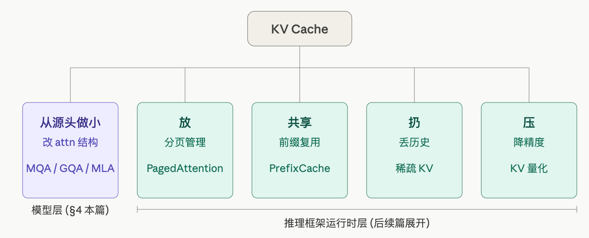
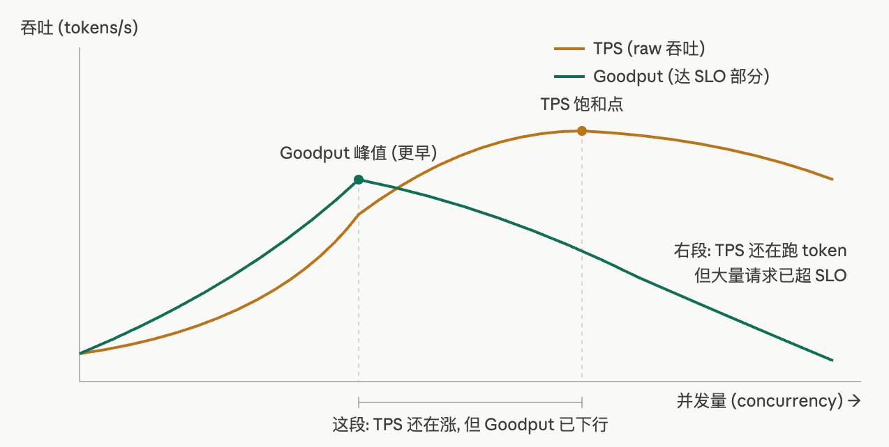
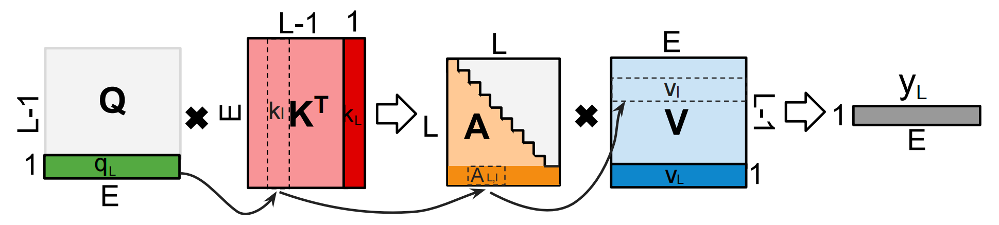
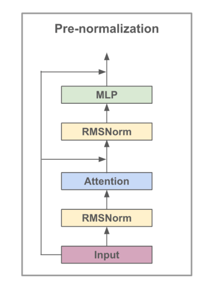
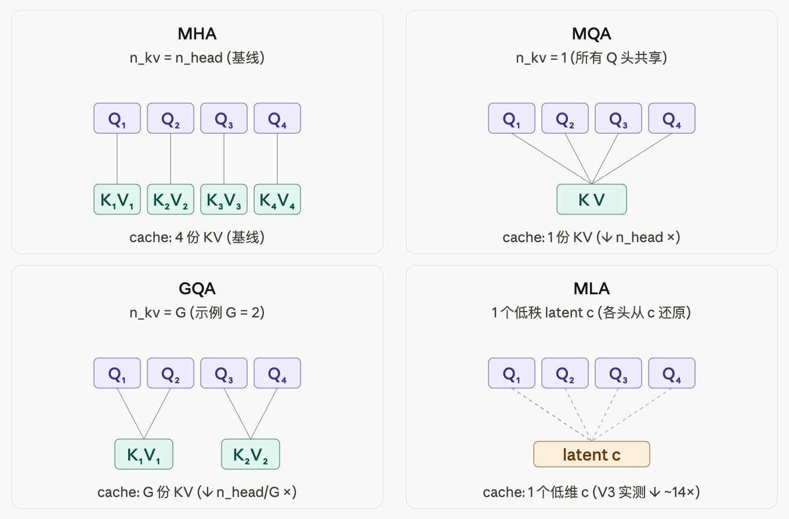

01-推理基础：PD / 性能指标 / KV Cache
TL; DR：训练 vs 推理 (prefill / decode) → 推理性能指标 → KV Cache (怎么存 / 多大 / 相关优化) → 算法层省 KV (MQA / GQA / MLA) → sampling → 手写带 KV cache 的 generate (PD都有)
- [Quick Ref for 手写 code]：mini-inference ｜ ipynb ｜ Colab
- MHA with KV Cache（§3.2）｜ GQA（§4.3）｜ next-token generate（§6）
- [常考面试点]
- 遇到过的：手写 MHA with KV Cache、next-token generate（PD 分开版）、GQA、MLA(?)
- 其他可能问到的：prefill vs decode、TTFT / TPOT、KV cache 多大、sampling
前言
01_Transformer.md §3.1 提到过：训练能一次性输入整句、并行算；推理是自回归的，只能逐 token 串行生成。
默认训练那套和 Transformer / attention / MHA 都已经熟悉 (Transformer篇讲过)，这里只在需要时回顾。作为推理优化系列的第一篇，它把后面每篇共享的底座讲清楚：
- prefill / decode：推理相对训练的计算流差别
- 推理性能指标：TTFT / TPOT / 吞吐 / SLO / Goodput
- KV Cache：decode 对前文的"记忆"载体 -> 怎么存、占多少 -> 由此衍生一堆优化（后续篇）
- 算法层省 KV：MQA / GQA / MLA（本篇的主要内容）
- Sampling：得到 logits 后如何选下一个 token
- 最后手写一个带 KV cache、分 prefill / decode 的 next-token
generate()

1. 和训练的区别：prefill 与 decode
和训练比，推理有两点不同：
- 训练不需要 KV cache： - 训练时整句一次并行前向，每个位置以 next token 作为 GT 标签同时算 loss，没有自回归循环，也就没有需要跨步缓存的中间结果 - 训练时仅考虑本 chunk 内的上下文，不需要长上下文记忆载体
- 推理自回归，分 prefill / decode 两段： - prefill：并行处理整段 prompt - decode：之后逐个生成 token
1.1 自回归循环（无 cache）
先看朴素实现（PD 不分）：每次输入一段 prompt → 输出每个位置的 logits → 取最后一个位置选 next token → 拼回输入，反复迭代：
@torch.no_grad()
def generate_naive(model, input_ids, max_new_tokens):
for _ in range(max_new_tokens):
logits = model(input_ids) # [B, T, V]，整段序列重新前向
next_logits = logits[:, -1, :] # 只要最后一个位置的预测
next_id = next_logits.argmax(-1, keepdim=True) # greedy
input_ids = torch.cat([input_ids, next_id], dim=1) # 拼回去，T += 1
return input_ids
明显的浪费：每步都把整段 input_ids 重新前向一遍。第 \(t\) 步要算 \(t\) 个位置的 Q / K / V，但只有最后一个是新的，前 \(t-1\) 个的 K / V 上一步已经算过。把重复的部分缓存下来即 KV Cache（§3）。
1.2 prefill vs decode
上面的循环里，一次并行输入多个 token 和 每次只输入一个 token 是两种计算：
- Prefill：首轮就是整段 prompt（\(n\) token）并行前向，产出整段的KV cache，第一个待生成的 token。
- Decode：之后每步只 forward 1 个新 token，读已缓存的 KV，生成 1 个新 token，添加新 token 的 KV Cache。
两者计算特性相反，根在 attention 的形状（batch=1）：
Prefill: Q [n, d] × Kᵀ [d, n] → 打分矩阵 [n, n] ← 矩阵 × 矩阵，大 GEMM
Decode: q [1, d] × Kᵀ [d, t] → 打分向量 [1, t] ← 向量 × 矩阵，瘦长 GEMV
| 特性 | Prefill | Decode |
|---|---|---|
| 输入 | 整段 prompt（\(n\) token） | 每步 1 个新 token |
| attention 形状 | 矩阵 × 矩阵（GEMM） | 向量 × 矩阵 |
| 瓶颈 | 算力（compute-bound） | 访存（memory-bound） |
| 单步开销 | 正比于 \(n\) | 几乎恒定（只多读一行 KV） |
| 对应延迟指标 | TTFT（首 token 延迟） | TPOT（每 token 间隔） |
两阶段瓶颈正相反：
- Prefill = compute-bound：\(n \times n\) 打分矩阵 + FFN 全是大 GEMM，算量 \(\propto n^2\)；访存量被算量盖住，能跑到 GPU 算力上限。
- Decode = memory-bound（IO-bound）：每步只有 1 个 query，算量极小，但仍要读完整权重 + 全部历史 KV——访存量远超算量，瓶颈落在 HBM 带宽，逐 token 串行也无法靠并行掩盖。
KV cache 由此成为推理的核心矛盾——既占显存、又占带宽。
prefill 不等于"cache 从空开始"。其本质是"一次并行处理 ≥1 个新 token"——多轮对话场景中，新一轮的用户输入接在前几轮已有的 KV cache 后面 prefill。
2. 推理性能指标
§1 把推理分成 prefill / decode 两段。但"推理快"还是模糊的——用户感受到的"等多久"和系统能"接多少并发"是两个轴，对应两套指标。这套度量后面每篇都会引用，放在 KV Cache 之前先讲清。
| 视角 | 关心什么 | 主要指标 |
|---|---|---|
| 用户（单请求） | 等多久收到 / 流多快 | TTFT, TPOT |
| 系统（整体） | 同时能服务多少 | RPS, TPS, Goodput |
2.1 单条延迟（用户视角）
对于单条请求，延迟主要看两个：TTFT 和 TPOT。
用户发请求 ──► [排队 + Prefill] ──► token₁ ──► token₂ ──► token₃ ──► ... ──► last
└────────── TTFT ──────────┘└──── 后续 token 间平均间隔 = TPOT ─┘
- TTFT（Time To First Token）：请求发出到收到第一个 token 的时间，含排队 + prefill。决定用户"等多久才看到第一个字"。
- TPOT（Time Per Output Token）：第一个 token 之后，每个新 token 的平均间隔。决定"打字速度"流不流畅。
和两阶段的映射：TTFT 主要由 prefill 决定、TPOT 主要由 decode 每步决定。
另外两个偶尔会见到的派生量，了解即可： - E2EL（End-to-End Latency）：请求发出到最后一个 token 收完，\(\text{E2EL} = \text{TTFT} + \text{TPOT} \times (N_{\text{out}} - 1)\)，即端到端总时长 - ITL（Inter-Token Latency）：相邻两 token 的精确间隔。单请求下 ITL 均值 = TPOT；多请求聚合时 TPOT 按请求平均、ITL 按 token 平均，serving 报告偶尔区分
分位数比平均更重要：生产里常说的"长尾"就是分布末端那一截——少数最慢请求拖出来的尾巴。Mean 会被长尾拉偏但定位不到它，分位数才能精确抓到。
| 指标 | 含义 | 用途 |
|---|---|---|
| Mean | 算术平均 | 趋势监控，但被长尾拉偏 |
| P50（median） | 一半请求低于此值 | "典型用户"的体验 |
| P95 / P99 | 95% / 99% 请求低于此值 | 抓长尾，SLA 的常用阈值 |
P99 TTFT = 100 s 意味着 1% 用户要等 100 秒以上才看到第一个字——高流量下不可忽视。生产 SLO 通常以 P95 / P99 为准而非 mean，"治理长尾"本质上就是压低 P95 / P99。
2.2 并发吞吐（系统视角）
引擎视角，看引擎整体能扛多少并发请求。单请求延迟仍看 §2.1。
- TPS（tokens/s）：每秒处理的 token 数。分为 Input TPS（prefill 主导）/ Output TPS（decode 主导），对应 §1.2 的 compute-bound / memory-bound。
- RPS（requests/s）：每秒完成请求数，粒度更粗，benchmark 报告常用。
提高并发，TPS 不会线性增长——画出来大致是一条饱和曲线：

由于资源有限，过了饱和点请求开始排队、KV cache 反复 evict——TPS 倒退；排队也让 P95 / P99 的增长速度远超 mean（长尾被放大）。
仅看 raw TPS 是不够的：raw TPS 把所有完成的请求都计入，但延迟超标的请求实际已不可用。引入延迟阈值 SLO（如 TTFT(P95) ≤ 500 ms），只统计达标的 = Goodput。结论因此修正：引擎真正能承受的并发上限是 Goodput 的峰值，比 raw TPS 饱和点更早到达——这也是 PD 分离论文 DistServe 选 Goodput 而非 raw TPS 作主优化目标的原因。
2.3 核心权衡：延迟 vs 吞吐
把 §2.1 的延迟和 §2.2 的吞吐放一起看，根本矛盾在 §1.2 两阶段对 batch 的需求相反：
| 阶段 | 瓶颈 | batch 偏好 |
|---|---|---|
| Prefill | compute-bound | 小 batch 即可打满，再大提升有限 |
| Decode | memory-bound | 大 batch 摊薄搬运成本，吞吐随并发提升 |
→ 压 TTFT：满足 prefill 需求，小 batch、独占资源 → 吞吐低 → 提吞吐：满足 decode 需求，大 batch、共享资源 → TTFT 上涨
后面整套优化都在这条 tradeoff 上找折中：
| 思路 | 怎么破 | 在哪展开 |
|---|---|---|
| continuous batching | decode 中途插新请求 | PD 混合（后续篇） |
| chunked prefill | 长 prefill 切片，和 decode 同步跑 | PD 混合（后续篇） |
| PD 分离 | prefill / decode 分池，各用最优并行 | PD 分离（后续篇） |
| 投机解码 | 一步 decode 出多个 token | 投机解码（后续篇） |
3. KV Cache
3.1 为什么要存 cache
MHA 算 Q, K, V 是天然的——三步公式，两次 matmul 夹一个 softmax：
训练里整段一次性并行前向，K, V 是 forward 内的中间值，算完用完即弃——无需存储，因为不会再次使用。
推理（decode）情况不同。自回归、逐 token 生成意味着每一步都要让新 token 对前面所有 token 做一次 attention：

decode 第 \(L\) 步：
- 新计算的只有 \(\mathbf{q}_L\)、\(\mathbf{k}_L\)、\(\mathbf{v}_L\)（图中加粗的最后一行 / 列）
- 但 attention 要算的是 \(\mathbf{q}_L\) 对所有 \(j \le L\) 的 token 的 attention，所以前 \(L-1\) 个 \(\mathbf{k}_j, \mathbf{v}_j\) 都要参与——会被反复读取
- 下一步（\(L+1\)）会再读取这些 KV，加上新的 \(\mathbf{k}_L, \mathbf{v}_L\)；再下一步同理……
再加上关键观察——保证这种复用在数学上是合法的：
已计算的 token \(j < L\)，其 \((\mathbf{k}_j, \mathbf{v}_j)\) 不会再变。
反复读取 + 值不变 → 计算一次后缓存、跨 decode step 复用，即 KV cache：每层 attention 的 K, V 常驻 HBM。否则就退化为 §1.1 朴素 generate 那种每步重算整段、\(O(T^2)\) 的浪费。
| 每步 K / V 投影 | 生成 \(T\) token 总投影 | |
|---|---|---|
| 不带 cache（§1.1 朴素 generate） | 重算全部 \(t\) 个位置 | \(O(T^2)\) |
| 带 cache | 只算新增 1 个位置 | \(O(T)\) |
这组 KV 即模型对前文的"记忆"——attention 通过读取它们才能"看见"前文，KV 丢失则对应上下文也不复存在。后续整条优化线都围绕这份记忆展开。
3.2 手写 MHA + KV Cache
常考手写题。它是 01_01_Transformer.md §4.1 LLaMA 版训练 attention 的推理版（命名为
MHA_KV），相对训练版只多了 RoPE 的位置偏移和 KV 拼接两处。建议熟练掌握。
KV cache 就是把每层 attention 的 \(K, V\) 存在 HBM 里、常驻显存，每层一份。整段流程如下（括号内步骤与训练版 MHA 相同）：
cache: past_k, past_v: [B, num_head, past_kv_len, head_dim] 各一份, 随生成增长
流程: (proj → split heads) → rope → add kv → (Q@K) → mask → (softmax → @V → merge head → out_proj)
decode 每步：用新 token 算出这一层的 \(\mathbf{k}, \mathbf{v}\)，沿 seq_len 维拼到 cache 末尾，再用全量 \(K, V\) 算 attention：
import torch, torch.nn as nn, torch.nn.functional as F
from rotary_embedding_torch import RotaryEmbedding # 同 01-Transformer §4.1，不手写 RoPE
class MHA_KV(nn.Module):
def __init__(self, num_head, dim):
super().__init__()
self.num_head = num_head
self.dim = dim
self.head_dim = dim // num_head
self.q_proj = nn.Linear(dim, dim, bias = False)
self.k_proj = nn.Linear(dim, dim, bias = False)
self.v_proj = nn.Linear(dim, dim, bias = False)
self.out_proj = nn.Linear(dim, dim, bias = False)
self.rope = RotaryEmbedding(self.head_dim)
def forward(self, x, past_kv):
B, T, _ = x.shape
q = self.q_proj(x).view(B, T, self.num_head, -1).transpose(1, 2)
k = self.k_proj(x).view(B, T, self.num_head, -1).transpose(1, 2)
v = self.v_proj(x).view(B, T, self.num_head, -1).transpose(1, 2)
# rope —— decode 时新 token 位置是 past_kv_len, 不是 0（最易写错）
past_kv_len = past_kv[0].shape[2] if past_kv is not None else 0
q = self.rope.rotate_queries_or_keys(q, offset = past_kv_len)
k = self.rope.rotate_queries_or_keys(k, offset = past_kv_len)
# add previous kv cache —— 推理版相对训练版的核心改动
if past_kv is not None:
past_k, past_v = past_kv
k = torch.cat([past_k, k], dim = 2)
v = torch.cat([past_v, v], dim = 2)
# q@k/sqrt(d)
attn = q @ k.transpose(-1, -2) / (self.head_dim ** 0.5)
# mask —— prefill 段内仍要 causal mask; decode T=1 不需要
if T > 1:
mask = torch.ones(T, k.shape[2], device = x.device).tril(diagonal = past_kv_len).bool()
attn = attn.masked_fill(~mask, float('-inf'))
# softmax
attn = attn.softmax(-1)
# @v
out = (attn @ v).transpose(1, 2).contiguous().view(B, T, -1)
return self.out_proj(out), (k, v)
- prefill：
T = n（一批新 token 一次性前向）。首轮past_kv传 None 从空建起；多轮 / 复用前缀时past_kv非空，新 token 追加到已有 cache 末尾（上面mask的diagonal=past_kv_len正是为此）。 - decode：
past_kv是上一步返回的(k, v)，T = 1，只算新 token。
两个 decode 容易写错、也最常被追问的点：
- RoPE 的位置偏移：cache 里存的是已旋转过的 K，新 token 的 q / k 要按其绝对位置
past_kv_len旋转。若漏掉 offset，相对位置全部错位。 - causal mask：prefill 段内部需要 mask（token 不能看后面的）；decode 时 query 只有 1 个，可见范围就是全部已缓存的 K，无需 mask。
真实框架（HF / vLLM）不会每步
torch.cat（反复分配显存很慢），而是预分配定长 buffer、用游标写入。
3.3 显存测算
KV cache 总大小（字节）：
- \(2\)：K 和 V 各一份
- \(b\) batch、\(L\) 层数、\(s\) 序列长（prompt + 已生成）
- \(n_{kv} \cdot d_h\)：每个 token 每层的 KV 维度（MHA 下 \(n_{kv} = n_{head}\)，即 \(= d_{model}\)）
- dtype_bytes：bf16 = 2
单看"每 token 每模型占多少"最直观（batch=1，bf16）：\(2 \times L \times (n_{kv}\cdot d_h) \times 2\)：
| 模型 | 层数 \(L\) | KV 维度 \(n_{kv}\cdot d_h\) | 注意力 | 每 token KV |
|---|---|---|---|---|
| Llama-2-7B | 32 | 32×128 = 4096 | MHA | 512 KiB |
| Llama-3-8B | 32 | 8×128 = 1024 | GQA-8 | 128 KiB |
| Llama-2-70B | 80 | 8×128 = 1024 | GQA-8 | 320 KiB |
| DeepSeek-V3 | 61 | 512+64 = 576 | MLA | 68.6 KiB |
表里前三行直接套上面公式即可；MLA 那行是特例——它存的是一个同时还原 K 和 V 的联合隐向量（§4.4 展开）。
Llama-3-8B 若用 MHA（32 个 KV 头）会是 512 KiB/token，GQA-8 将其压到 128 KiB（4×）；DeepSeek-V3 若用 MHA（128 头）约 3.8 MiB/token，MLA 压到 68.6 KiB。压缩机制详见 §4。
3.4 KV cache 太贵：衍生的优化方向
KV cache 正比 token 数 × batch，长上下文 / 高并发下是显存与访存的双重瓶颈（§3.3 + §1.2 decode memory-bound）。围绕"对 KV cache 做什么"，推理优化大致分五类：
分两层，正交、可叠加：
- 模型层（改 attention 结构、训练时定死、写进权重）：MQA / GQA / MLA，本篇 §4。
- 推理框架运行时层（模型不动、serving 时做），后续篇一一展开：
- PagedAttention 是显存管理——接近 OS 虚拟内存的分页式管理，不动 KV 值
- PrefixCache / 稀疏 KV / KV 量化 是对 KV 内容 的操作（共享 / 丢 / 压）
对 KV cache 动手：
显存怎么放 → PagedAttention （放：模仿 OS 虚拟内存的分页管理、防碎片）
请求间复用 → PrefixCache （共享：相同前缀复用 KV）
历史 KV 太长 → 稀疏 KV （扔：丢 / 召回历史）
每 token 太大 → KV 量化 （压：每个 KV 元素更少 bit）
另外两条轴（不是 KV 操作）:
调度 / 吞吐 → continuous batching / PD 分离 / chunked prefill
减 decode 步数 → 投机解码
4. 模型层省 KV：MQA / GQA / MLA
为什么本篇只展开 MQA / GQA / MLA、其余留到后续篇？ 因为模型层（在 PyTorch attention 模块里直接改）是最直接的省 KV 路线。其余几类都属于推理框架运行时层，各自展开成一篇专题。
这四种 attention 是一条演化线，都在"省 KV cache"和"训练表达力"之间重新权衡。
4.1 MHA 优化思路
attention 唯一的硬约束来自残差：输出要能加回输入 x + attn(x)，所以输出维度必须 = \(d_{model}\)（即 hidden_dim，由模型设计时确定，例如 Llama-7B = 4096、MiniLlama = 512；见 01_01_Transformer.md §2.4）。这个约束只管输出，不管中间怎么算。

拆开一层 attention：
x [d_model] ──► Q = Wq·x [n_head × d_h] ┐
K = Wk·x [n_kv × d_h] ├─► attn ─► O [n_head × d_h] ─► Wo ─► [d_model]
V = Wv·x [n_kv × d_h] ┘ ↑ 残差只 pin 这里
- 被 pin 的：输出 = \(n_{head} \times d_h\)，由于 Q 与输出形状相同，Q 的头数与形状由此被间接定住（这是表达力的来源）。
- 没被 pin 的：K / V 存几个头（\(n_{kv}\)），残差完全不约束。
MHA 默认令 \(n_{kv} = n_{head}\)——这只是约定而非约束，但 KV cache ∝ \(n_{kv}\)（§3.3），MHA 将其设到了最大值。
优化方向因此清晰：保持输出（Q 头数不变、表达力不损失），只压缩未被 pin 的 KV 侧。
- MQA / GQA：KV 头数从 \(n_{head}\) 砍到 1 / \(G\)（§4.2 / §4.3）
- MLA：放弃"按头存 KV"，换成低秩隐向量（§4.4）

4.2 MQA
MQA（Multi-Query Attention，Google 2019）最激进：所有 Q 头共享同一份 K / V，只有 Q 还是多头。KV 维度从 \(n_{head}\cdot d_h\) 降到 \(d_h\)（1 个头），KV cache 缩小 \(n_{head}\) 倍。
代码 diff 就是 K / V 投影的输出维度（相对 §3.2）：
self.q_proj = nn.Linear(hidden_dim, hidden_dim) # Q 仍是满头 num_heads × head_dim
self.k_proj = nn.Linear(hidden_dim, self.head_dim) # ← K 只投影出 1 个头
self.v_proj = nn.Linear(hidden_dim, self.head_dim) # ← V 只投影出 1 个头
# 算 attention 时 1 份 K/V broadcast 给所有 Q 头
代价是表达力：KV 只剩一组，多头不再能在 K / V 维度各自建模，质量有可观下降。因此 MQA 很少被原样大规模采用，更多作为 GQA 的极端端点存在（PaLM、Falcon 用过）。
4.3 GQA
GQA（Grouped-Query Attention，Google 2023）是折中：把 \(n_{head}\) 个 Q 头分成 \(G\) 组，每组共享一份 K / V。
- \(G = 1\)：所有头共享 → 退化成 MQA
- \(G = n_{head}\)：每头一份 → 退化成 MHA
- \(1 < G < n_{head}\)：之间连续插值
KV cache 缩小 \(n_{head} / G\) 倍。实践中 \(G\) 取 8 是常见平衡点（Llama-2-70B、Llama-3 全系、Qwen2/3 多数档位均为 GQA-8）：相对 MHA 将 KV 减少数倍，质量几乎无损。完整 code（★ 是相对 §3.2 MHA_KV 的改动）：
class GQA_KV(nn.Module):
def __init__(self, num_head, num_kv_head, dim): # ★ 多一个 num_kv_head 参数
super().__init__()
assert num_head % num_kv_head == 0 # ★ 必须整除
self.num_head = num_head
self.num_kv_head = num_kv_head # ★ KV 组数 G
self.group_size = num_head // num_kv_head # ★ 每组 Q 数量
self.dim = dim
self.head_dim = dim // num_head
self.q_proj = nn.Linear(dim, dim, bias = False)
self.k_proj = nn.Linear(dim, num_kv_head * self.head_dim, bias = False) # ★ K 只投影 G 个头
self.v_proj = nn.Linear(dim, num_kv_head * self.head_dim, bias = False) # ★ V 同
self.out_proj = nn.Linear(dim, dim, bias = False)
self.rope = RotaryEmbedding(self.head_dim)
def forward(self, x, past_kv):
B, T, _ = x.shape
q = self.q_proj(x).view(B, T, self.num_head, -1).transpose(1, 2)
k = self.k_proj(x).view(B, T, self.num_kv_head, -1).transpose(1, 2) # ★ 用 num_kv_head 拆头
v = self.v_proj(x).view(B, T, self.num_kv_head, -1).transpose(1, 2) # ★
# rope
past_kv_len = past_kv[0].shape[2] if past_kv is not None else 0
q = self.rope.rotate_queries_or_keys(q, offset = past_kv_len)
k = self.rope.rotate_queries_or_keys(k, offset = past_kv_len)
# add previous kv cache —— cache 里只存 num_kv_head 份, 这就是省 KV 的来源
if past_kv is not None:
past_k, past_v = past_kv
k = torch.cat([past_k, k], dim = 2)
v = torch.cat([past_v, v], dim = 2)
new_kv = (k, v) # ★ 在 expand 前保存 cache
# ★ expand: 每份 KV broadcast 给组内 group_size 个 Q (逻辑展开, 不真复制显存)
k = k.repeat_interleave(self.group_size, dim = 1) # [B, num_head, T, head_dim]
v = v.repeat_interleave(self.group_size, dim = 1)
# q@k/sqrt(d)
attn = q @ k.transpose(-1, -2) / (self.head_dim ** 0.5)
# mask
if T > 1:
mask = torch.ones(T, k.shape[2], device = x.device).tril(diagonal = past_kv_len).bool()
attn = attn.masked_fill(~mask, float('-inf'))
# softmax
attn = attn.softmax(-1)
# @v
out = (attn @ v).transpose(1, 2).contiguous().view(B, T, -1)
return self.out_proj(out), new_kv # ★ 返回 expand 前的 (num_kv_head 份)
repeat_interleave/expand只是逻辑展开，不真复制显存——KV cache 里仍只存 \(G\) 份。真正在 kernel 层处理"一份 KV 服务多个 Q 头"的是 FlashAttention 的 GQA 支持（一个 KV block 被组内多个 Q 复用）。
4.4 MLA
MQA / GQA 是"少存几个头"，MLA（Multi-head Latent Attention，DeepSeek-V2）换了一种思路，设计也明显更复杂：把每个 token 的 K/V 一起压成低维 latent \(\mathbf{c}_t\) 存储，使用时再还原（类似 LoRA 式低秩分解，cache 中只存低维 \(\mathbf{c}_t\)）。
对照 §3.2 的 MHA 流程，先抓住一个直觉：只有 Q@K 这一步被改，@V 及之后完全不变——因为位置（RoPE）只参与 Q·K 打分，不进入 value。
额外要存的权重（都是固定模型权重、每层一份、不随 token 涨；真正进 cache 的只有 \(\mathbf{c}\) 和 \(k^R\)）：
| 矩阵 | 作用 |
|---|---|
| \(W^{DKV}\) | 下投影 \(h \to \mathbf{c}\)，把输入压成 latent（\(\mathbf{c}\) 进 cache） |
| \(W^{UK}\) | 上投影 \(\mathbf{c} \to K\)，还原出每头各异的 key |
| \(W^{UV}\) | 上投影 \(\mathbf{c} \to V\)，还原出每头各异的 value |
| \(W^{KR}\) | 生成解耦 RoPE key \(k^R\)（共享一份、带位置，\(k^R\) 也进 cache） |
还原出的 K/V 每头各异，区别于 MQA 的"所有头共用一份"——MLA 是各头从同一个 latent 解出各自的 K/V，因此表达力接近 MHA。
完整 code（★ 是相对 §3.2 MHA_KV 的改动）：
class MLA_KV(nn.Module):
def __init__(self, num_head, dim, d_c = 512, d_h = 128, d_h_R = 64):
super().__init__()
self.num_head = num_head
self.d_h = d_h # 每头内容段 dim
self.d_h_R = d_h_R # 解耦 RoPE key dim (共享单头)
self.d_c = d_c # latent dim
# Q: 比 MHA 每头多劈一段 q^R 扛位置
self.q_proj = nn.Linear(dim, num_head * (d_h + d_h_R), bias = False) # ★ q 多劈 d_h_R
# ★ KV 改成: 下投影出 latent + 两个上投影还原成各头 K^C / V
self.W_DKV = nn.Linear(dim, d_c, bias = False) # ★ h → c (代替 W_K/W_V)
self.W_UK = nn.Linear(d_c, num_head * d_h, bias = False) # ★ c → K^C (各头各异)
self.W_UV = nn.Linear(d_c, num_head * d_h, bias = False) # ★ c → V (各头各异)
# ★ 共享单头的 RoPE key
self.W_KR = nn.Linear(dim, d_h_R, bias = False) # ★ 共享单头, 带位置
self.out_proj = nn.Linear(num_head * d_h, dim, bias = False)
self.rope = RotaryEmbedding(d_h_R)
def forward(self, x, past_kv):
B, T, _ = x.shape
# ★ Q 劈成两段: 内容 q^C + 位置 q^R
q = self.q_proj(x).view(B, T, self.num_head, self.d_h + self.d_h_R).transpose(1, 2)
q_C, q_R = q.split([self.d_h, self.d_h_R], dim = -1)
# ★ latent c (代替 K, V 投影; 不分头, shape = [B, T, d_c])
c = self.W_DKV(x)
# ★ 共享单头 RoPE key, shape = [B, 1, T, d_h_R]
k_R = self.W_KR(x).unsqueeze(1).view(B, 1, T, self.d_h_R)
# rope —— 只 rope 位置段 (q^R / k_R), 内容段不 rope
past_kv_len = past_kv[0].shape[1] if past_kv is not None else 0
q_R = self.rope.rotate_queries_or_keys(q_R, offset = past_kv_len)
k_R = self.rope.rotate_queries_or_keys(k_R, offset = past_kv_len)
# ★ add kv cache: 拼的是 (c, k_R), 不是 (K, V)!
if past_kv is not None:
past_c, past_k_R = past_kv
c = torch.cat([past_c, c], dim = 1)
k_R = torch.cat([past_k_R, k_R], dim = 2)
new_kv = (c, k_R) # ★ cache 每 token 仅 d_c + d_h_R
# ★ 还原各头各异的 K^C, V
K_C = self.W_UK(c).view(B, -1, self.num_head, self.d_h).transpose(1, 2)
V = self.W_UV(c).view(B, -1, self.num_head, self.d_h).transpose(1, 2)
# ★ Q@K = 内容段 + 位置段相加 (MLA 核心结构改动)
attn = (q_C @ K_C.transpose(-1, -2) + q_R @ k_R.transpose(-1, -2)) / ((self.d_h + self.d_h_R) ** 0.5)
# mask / softmax (不变)
if T > 1:
mask = torch.ones(T, K_C.shape[2], device = x.device).tril(diagonal = past_kv_len).bool()
attn = attn.masked_fill(~mask, float('-inf'))
attn = attn.softmax(-1)
# @V + merge + out_proj (不变)
out = (attn @ V).transpose(1, 2).contiguous().view(B, T, -1)
return self.out_proj(out), new_kv
Q@K 拆成"内容段 + 位置段"两项相加是 MLA 的核心设计：内容段 \(K^C\) 不带位置，位置段由共享的带 RoPE key 单独承载。
这不是数学上复现标准 RoPE——标准 RoPE 把内容和位置耦合在 key 的所有维度上；MLA 主动将两者拆成两路，换来内容通道可被吸收（见下）。
吸收：上面"还原 \(K^C\) / \(V\)"运行时其实不做——\(W^{UK}\) 可预乘进 \(W^Q\)、\(W^{UV}\) 预乘进 \(W^O\)，直接在低维空间用 q 和 latent 计算。于是访存像 MQA（一份共享 latent 读一次），表达力像 MHA（每头 query 变换不同）。
代价与收益：每 token 每层实际缓存 \(d_c + d_h^R\)。
DeepSeek-V2 取 \(d_c=512, d_h^R=64\)（共 576），相比同代 GQA 减少约 93% KV cache；代价是结构 / kernel / 训练都明显比 MQA / GQA 复杂——这也是稠密模型默认仍用 GQA、MLA 主要见于 DeepSeek 系的原因。
4.5 Cache 需求对比
| 每 token 每层 KV | 训练表达力 | 推理收益 | 代表模型 | |
|---|---|---|---|---|
| MHA | \(2\,n_{head}\,d_h\) | 最强（每头独立 KV） | 基线，KV 最大 | GPT-2/3、Llama-2-7B |
| MQA | \(2\,d_h\) | 弱（KV 只一组） | KV ÷ \(n_{head}\)，质量下降明显 | PaLM、Falcon |
| GQA | \(2\,G\,d_h\) | 接近 MHA（\(G\) 适中时） | KV ÷ \((n_{head}/G)\)，质量几乎不掉 | Llama-3、Qwen2/3 |
| MLA | \(d_c + d_h^R\) | 强（低秩但联合压缩） | KV 最小，但结构最复杂 | DeepSeek-V2/V3 |
总结：MQA 过于激进；GQA 是当下稠密模型的默认选择；MLA 将 KV 压到极致，代价是 attention 结构和 kernel 都更复杂。
5. Sampling
得到最后一个位置的 logits（词表上每个 token 的分数）后，如何选下一个 token，就是采样。它和 KV cache 那条线正交——只决定生成的确定性 vs 多样性，不影响推理的计算结构，属于解码算法的设计。本节相对独立，了解即可。
5.1 基本策略
- Greedy（贪心）：每步选概率最高的 token。简单可复现，但容易重复单调。
- Random Sampling：按 softmax 概率直接抽样。具备多样性，但质量不稳定。
- Top-k：只在概率最高的 \(k\) 个里采样，其余置零再归一化，截断长尾。\(k=1\) 即 greedy。
- Top-p（核采样 / Nucleus）：从大到小累加概率，到刚超过 \(p\) 为止的那批 token 里采样。保留集合大小随分布形状自适应，通常优于 top-k。
- Beam Search：同时维护 \(k\) 条候选序列，按累计对数概率扩展、剪枝。偏高似然、通顺但保守，常用于翻译 / 摘要，开放式生成基本不用（缺乏多样性，且每条 beam 各自维护一份 KV cache，成本高）。
5.2 Temperature
Temperature \(T\) 不直接选 token，而是先缩放 logits 再 softmax：
- \(T < 1\)：分布更尖锐，更倾向最高分（更确定）
- \(T > 1\)：分布更平坦，更随机
- \(T \to 0\)：退化成 greedy；\(T \to \infty\)：趋近均匀
5.3 工程组合
实际推理里这些串成一条流水线，再叠惩罚项：
logits ─► temperature 缩放 ─► top-k 截断 ─► top-p 截断 ─► softmax ─► 按概率抽 1 个
（repetition_penalty / logit_bias 在 softmax 前改 logits）
- repetition_penalty：对最近已生成过的 token 压低 logit，避免重复生成。
- logit_bias / bad words：强制禁用或鼓励某些 token（屏蔽词、强制格式）。
典型配置：ChatBot 类用 temperature≈0.7 + top_p≈0.9；要稳定可复现的结构化输出用 temperature=0（greedy）。
6. 手写 generate（KV Cache + PD 两阶段）
常考手写题：写一个 next-token generate()，带 KV cache、分 prefill / decode 两阶段。
6.1 核心 code（需要背诵）
[Next Token Generate]
- Input：model, input_ids, max_new_tokens, [past], [eos_id]
- input_ids: [B, n] prompt
- Output：(generated_ids [B, n + 生成长度], past) —— past 给下一轮复用
- Prefill：(past, input_ids) → model → logits, past
- next_id = sample(logits[:, -1]) → 写入 out / 检查 EOS
- Decode：循环 (past, next_id) → model → logits, past
- next_id = sample(logits[:, -1]) → 写入 out / 检查 EOS（全 batch 完成才退）
@torch.no_grad()
def generate(model, input_ids, max_new_tokens, past=None, eos_id=None, **kw):
B = input_ids.shape[0] # input_ids: [B, n]
# prefill: 整段 prompt 一次前向, 写进 KV cache
logits, past = model(input_ids, past) # logits [B, n, V]; past 可空(新会话)/非空(多轮复用)
next_id = sample(logits[:, -1], **kw) # logits[:,-1] [B, V] → next_id [B, 1]
out = [next_id]
finished = torch.zeros(B, dtype=torch.bool, device=input_ids.device) # 各序列是否已完成
if eos_id is not None:
finished = next_id.squeeze(1) == eos_id # prefill 出的第一个 token 也可能是 EOS
# decode: 每步只输入上一步产出的 1 个 token
for _ in range(max_new_tokens - 1):
logits, past = model(next_id, past) # 输入 [B,1] → logits [B, 1, V]; 复用历史 KV
next_id = sample(logits[:, -1], **kw) # [B, 1]
if eos_id is not None:
next_id = next_id.masked_fill(finished[:, None], eos_id) # 已停的填 EOS, 不再附加新 token
finished |= (next_id.squeeze(1) == eos_id) # 累积: 一旦停就永远算停(异步结束)
out.append(next_id)
if eos_id is not None and finished.all(): # 全停才退
break
return torch.cat([input_ids, *out], dim=1), past # [B, n + 生成长度], past 给下一轮复用
[Sampling pipeline]
次要，了解即可。（§5：temperature → top-k → top-p → 按概率抽 1 个）
@torch.no_grad()
def sample(logits, temperature=1.0, top_k=None, top_p=None): # logits: [B, V]
if temperature == 0: # greedy (可复现)
return logits.argmax(-1, keepdim=True) # [B, 1]
logits = logits / temperature
if top_k: # 只留最高的 k 个
kth = logits.topk(top_k, dim=-1).values[..., -1, None] # 第 k 大的门槛 [B, 1]
logits = logits.masked_fill(logits < kth, float('-inf'))
if top_p: # 留累计概率到 p 的最小集合
s, si = logits.sort(descending=True, dim=-1) # s/si: [B, V] 排序后的值 / 原下标
cum = s.softmax(-1).cumsum(-1) # [B, V] 累计概率
drop = cum > top_p
drop[..., 1:] = drop[..., :-1].clone() # 右移一位, 保留刚越过 p 的那个
drop[..., 0] = False
s = s.masked_fill(drop, float('-inf'))
logits = torch.full_like(logits, float('-inf')).scatter(-1, si, s) # 散回原词表序 [B, V]
return torch.multinomial(logits.softmax(-1), 1) # [B, V] 概率 → 抽 1 个 → [B, 1]
6.2 完整可跑版
完整版：08_mini_inference.ipynb ｜ Colab（你可以使用免费的T4 运行）
- 核心： §6.1 那两段 generate + sample
- 其他部分：DecoderBlock + MiniLlama_KV 装配让上面能跑起来
将同一份 generate 应用到真实 TinyLlama-1.1B-Chat 上，可以成功续写啦：
Prompt："The future of LLM inference is"
Output："...not to be confused with a particular machine learning algorithm or framework. Rather, it is the development of new techniques and architectures that can be used to perform highly efficient and accurate inference on large-scale data sets. These techniques can range from novel optimization methods to novel hardware architectures that enable efficient parallelism..."